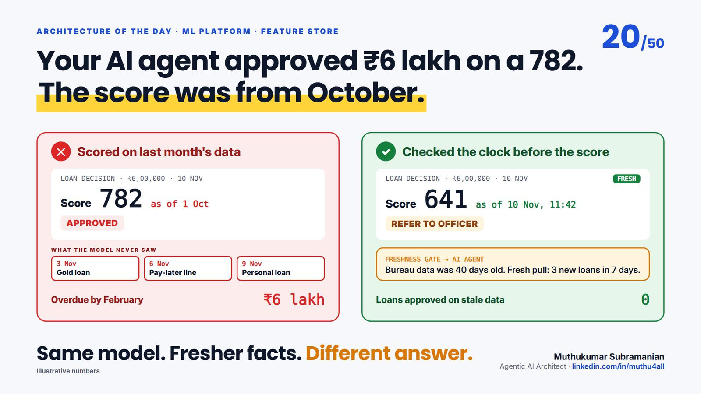

Your AI Agent Approved Loans on a Stale Credit Score. Who Pays for the Bad Debt?
By Muthukumar Subramanian · Agentic AI Architect

10 November, 11:40 AM. A small NBFC in Coimbatore gets a ₹6 lakh personal loan application. Its new lending agent reads the payslips, checks the bank statement, calls the credit model and gets back a score: 782. Approved in nine minutes. The customer is delighted.
The score was real. It was also from 1 October.
Between 3 and 9 November the same borrower had taken three new loans: a gold loan, a buy-now-pay-later line and another personal loan. None of it was in the features the model saw. By February, the EMIs had stopped.
Over that quarter the agent approved 61 loans the same way. ₹2.4 crore of them are now overdue. (The NBFC, the borrower and every number here are illustrative. The pattern is not.)
The model wasn't wrong. It was answering a question about October.
The architecture today
Most lenders already run a classical credit model, and it's usually a good one. Gradient-boosted trees on a few hundred features: bureau score, days past due, number of recent enquiries, income stability, existing EMIs.
The plumbing around it is the weak part. A monthly batch job builds the features from the warehouse. A data scientist trained the model in a notebook on a CSV from last year. At serving time, a different piece of code recomputes the same features for one applicant, slightly differently. Nobody notices that the training "days past due" counted grace days and the live one doesn't. That gap has a name, training-serving skew, and it quietly bends every score.
Now we've put an LLM agent on top. It's fast, it's polite, it reads documents brilliantly, and it trusts whatever number the score API returns.
👉 [IMAGE: A-day20-2-in-article-architecture.png]
Caption: The credit model you already have, plus three new parts: a feature store that timestamps every value, a freshness gate in plain code, and an LLM agent that explains but never scores. Grey is what you already have. Amber is new.
Where AI plugs in now: a feature store and a freshness gate
The first fix isn't a better model. It's a feature store: one place where every feature is defined once, computed once, and served the same way to training and to live decisions.
→ One definition per feature. "Days past due" is written once, as code, with an owner in credit risk. Training and serving read the same definition, so the skew disappears.
→ Every value carries its time. Not just "bureau score 782", but "782, as of 1 Oct". The online store serves the latest value in milliseconds; the offline store keeps history so you can train on what was known at the time, not on what you know now.
→ Every feature has a freshness SLA. For a lending decision, recent enquiries must be under 24 hours old. The bureau score under 7 days. If a value is older, the system knows it.
→ A freshness gate in plain code. Before the agent uses a score, a small function checks the timestamps. Too old? It triggers a fresh bureau pull, or sends the file to an officer. The agent can't skip it.
And one rule that holds the whole thing together: the LLM never produces the score. The governed model does. The agent gathers documents, explains the reason codes to the officer and the customer, and asks for what's missing. On Day 14 we put a fast model on the payment stream and the agent on the case. Same split here: models score, code checks, agents explain.
India makes the freshness question sharper, not easier. Since 1 January 2025, RBI has required lenders to report credit information to the bureaus every fortnight, not monthly, within seven days of each fortnight. That's better. It also means a bureau record can still be a few weeks behind real life. A feature store doesn't make data fresh. It makes staleness visible.
👉 [IMAGE: A-day20-3-in-article-freshness-table.png]
Caption: A freshness SLA for every feature the agent relies on, and what happens when it's missed. Screenshot it for your next credit-model review. SLAs are illustrative.
Where it's heading with agents
Today one agent calls one credit model. In two or three years, a lender will run a dozen agents: onboarding, collections, pricing, renewal offers, fraud. Every one of them will ask the same facts: income, exposure, repayment behaviour, risk score.
That turns the feature store into the facts layer for agents. Not a data-science tool hidden in the ML team, but the place every agent goes for numbers, with versions, owners and timestamps. The model registry becomes the list of which models an agent may call, in which version, for which decision.
The vendors see it. Databricks bought the feature-store company Tecton in 2025 and talked about it as real-time data for AI agents. Expect every platform to pitch "features as agent tools".
Watch it work
Same application, same agent. First without the freshness gate, then with it.
👉 [GIF: A-day20-4-in-article-freshness-gate.gif]
Caption: Features flow into the store with timestamps. One goes stale, the gate holds the agent, a fresh pull arrives, and the score changes from 782 to 641. All figures illustrative.
Pros
→ The same feature definitions feed training and live decisions, so scores stop drifting for silly reasons
→ Every score carries an "as of" time, which credit officers and auditors can actually check
→ The agent gets faster and safer at once: it reads fresh, governed numbers and explains them, instead of guessing
Cons
→ A feature store is real platform work: pipelines, an online store, backfills, monitoring
→ Fresh data costs money. Every extra bureau pull has a price, so you need rules for when it's worth it
→ Freshness SLAs need someone to agree them with credit risk, and to keep them current as products change
The hard part
It's ownership, and it sits between three teams. Data engineering runs the pipelines. Credit risk owns the model and its cut-offs. The new agent team owns the workflow. When the October score approved a November loan, each of them could point at another.
So name the owners. An AgentOps engineer, the person who runs agents in production the way an SRE runs services, owns the freshness gate and its alerts. An ML platform engineer owns the feature store and the model registry. And a forward deployed engineer (FDE), an engineer who works inside the customer's team and ships on their real systems, sits with the credit officers for two weeks and learns which features they actually trust, and which ones they quietly recheck by phone. These titles are still settling. The bad-debt report isn't.
There's a regulatory edge too. A lender has to explain a rejection. "The model said 641" isn't an explanation. Reason codes from the model, put into plain words by the agent and checked by a person, can be.
The opportunity
Most NBFCs, co-operative banks and small finance banks bought or built a credit model years ago. Very few have the platform around it: a feature store, a registry, freshness SLAs. Now they're adding agents on top.
That's the market: hybrid AI platforms that join classical ML and LLM agents. A packaged "decision stack" for mid-size lenders: governed features, versioned models, a freshness gate, and agents that explain. A "feature freshness audit" is the easy first sale: take last quarter's approvals and show how many were scored on data older than a week, and what those loans are doing now. The same pattern sells beyond lending: insurance pricing, collections, demand forecasting for distributors.
Tools to try
Feast, the open-source feature store · Databricks feature engineering, now with Tecton · Vertex AI Feature Store on Google Cloud · Amazon SageMaker Feature Store · MLflow for the model registry and versions · any LLM for the explaining agent: Claude, GPT, Gemini or an open model.
That's Phase 2 done: ten data architectures for AI agents. Phase 3, agent patterns, starts tomorrow.
Your turn 👇
If the bureau data is a week old, should an AI agent still approve the loan: yes or no? One word.
Tag the person in your company who'd get the call when the bad-debt report lands.
Day 20 of 50 · follow along. Tomorrow: Day 21 · One AI Agent. One Job. ₹80,000 a Month Saved. Why Most Teams Start Too Big.